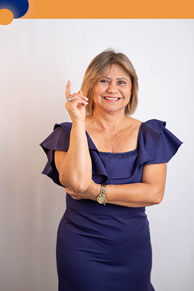

Eu, Noemi Santos, nascida em 19/05/61 na cidade de Inhuma, passei por muitas dificuldades. Aos 15 anos, saí do interior e fui para Picos. Depois de casada, estudei e me formei em contabilidade. Tornei-me uma empresária reconhecida, mas após uma crise financeira, mudei-me para Brasília, onde enfrentei muitos desafios. Em 1998, conheci a fé cristã, que me ajudou a superar as dificuldades. Desde então, tenho vivido com essa fé. Chegando em Valparaíso de Goiás em 1999, adaptei-me e prosperei.
Em 2004, fundei uma escola em sociedade com minha filha, Maria Yvelonia. Hoje, essa escola é o Colégio Positiv Plus. Desde 2004, também participei da política de Valparaíso, fundando o partido PRB, hoje Republicanos. Assumi vários cargos públicos em Valparaíso, como gerente geral da Secretaria de Saúde e diretora geral do Centro de Reabilitação de Valparaíso. Atualmente, trabalho com o Instituto Alpha, onde defendo os direitos das mulheres. Em 2019, assumi a presidência do Conselho de Mulheres Evangélicas de Valparaíso (COMEV), onde realizamos um trabalho dentro das igrejas com café da manhã.
Levando para essas mulheres uma palavra de apoio, como também acompanhamento psicológico e incentivo ao empoderamento feminino.
Eu, Noemi Santos, nascida em 19/05/61 na cidade de Inhuma, passei por muitas dificuldades. Aos 15 anos, saí do interior e fui para Picos. Depois de casada, estudei e me formei em contabilidade. Tornei-me uma empresária reconhecida, mas após uma crise financeira, mudei-me para Brasília, onde enfrentei muitos desafios. Em 1998, conheci a fé cristã, que me ajudou a superar as dificuldades. Desde então, tenho vivido com essa fé. Chegando em Valparaíso de Goiás, adaptei-me e prosperei.
Em 2004, fundei uma escola em sociedade com minha filha, Maria Yvelonia. Hoje, essa escola é o Colégio Positiv Plus. Desde 2004, também participei da política de Valparaíso, fundando o partido PRB, hoje Republicanos. Assumi vários cargos públicos em Valparaíso, como gerente geral da Secretaria de Saúde e diretora geral do Centro de Reabilitação de Valparaíso. Atualmente, trabalho com o Instituto Alpha, onde defendo os direitos das mulheres. Em 2019, assumi a presidência do Conselho de Mulheres Evangélicas, onde realizamos um trabalho dentro das igrejas com café da manhã.
Levando para essas mulheres uma palavra de apoio, como também acompanhamento psicológico e incentivo ao empoderamento feminino.